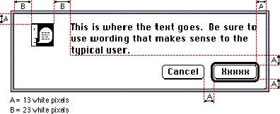

|
|
Basic Dialog Box LayoutIn dialog boxes, you should place buttons in locations that are functional and consistent--consistent both within your particular application and across other applications that you develop. Note that alert boxes are a type of dialog box and thus adhere to the same basic guidelines for proper layout. Place the action button in the lower-right corner with the Cancel button to its left. The default button is not necessarily the button in the lower-right corner; it should be the one for the action that the user is most likely to want to perform. This rule keeps the action button and the Cancel button consistently placed. If the default button were always in the lower-right corner, the buttons would change location depending on which one was the default choice. See the section "Button Behavior," Chapter 7, "Controls," on page 206 for more information on assigning the default button.Use a consistent amount of white space between the border of the dialog box and its elements. This creates a balanced appearance in the dialog box. Figure 6-21 shows the recommended location for buttons and text in dialog boxes; it also shows the proper placement of the alert icon in an alert box. Note that the measurements shown in Figure 6-21 reflect the visual appearance of a dialog box on the screen, not the actual settings that you would use when creating dialog boxes with a resource-editing tool such as ResEdit. See the chapter "Dialog Manager" in Inside Macintosh: Macintosh Toolbox Essentials for a detailed description of how to place buttons and text correctly in dialog boxes as well as alert boxes. Figure 6-21 Recommended spacing of buttons and text in dialog and alert boxes  The Western reader's eye tends to move from the upper-left corner of the dialog box to the lower right. Put the initial impression that you want to convey in the upper-left area (like the alert icon), and place the buttons that a user clicks in the lower right. Following this guideline makes it easier for users to identify what's important in a dialog box. When a dialog box is localized for worldwide versions of system software, the text in the dialog box may become longer or shorter. The alignment of the items in the dialog box may vary with localization. For example, Arabic and Hebrew are written right to left, so the items in an Arabic or Hebrew dialog (alert) box should be aligned on the right. The Control Manager, Menu Manager, and TextEdit routines handle the alignment of dialog box components. For more information, see the chapters that describe those managers in Inside Macintosh: Macintosh Toolbox Essentials and Inside Macintosh: Text. Be sure to create dialog items of the same size, so that they align properly when a user has a script that reads from right to left. This guideline is discussed in the section "Worldwide Compatibility" on page 16 in Chapter 2, "General Design Considerations." |